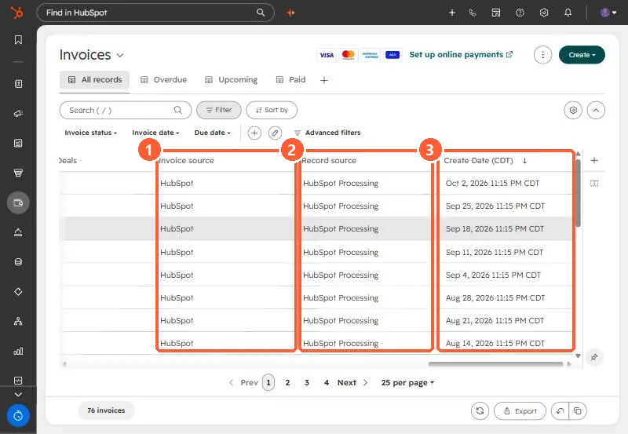

Short answer
Open the Invoices index, add the Record source and Create Date columns, and sort by date. In an agency portal, every invoice in HubSpot had a record source of Integration and was created within two weeks in November 2024, with nothing after that. Recent invoices from the billing tool were not there at all. That pattern means the integration stopped, or only ever ran once. It is not a problem with the one deal. HubSpot sets Record source automatically and it cannot be edited.
1. The question
A client paid an invoice raised in the agency's billing tool, and someone asked why it was not in HubSpot. The deal had no invoice associated.
2. Read the Invoices index
Open the Invoices index, add Record source and Create Date, and sort newest first. In my demo every invoice shows HubSpot as the invoice source and HubSpot Processing as the record source, created weekly.


In the agency portal the same view showed every invoice created by an integration over about two weeks in November 2024, numbered in the billing tool's series, and nothing since. The billing tool had invoices up to the current month.
3. What it means
The integration pushed one batch and then stopped. It may have been disconnected, uninstalled, or set up as a one-time backfill. Check Connected Apps to see whether it is still listed and connected, and see connected apps that need attention.
4. Options
- Repair or reconnect the integration.
- Create the invoice in HubSpot and associate it with the deal.
- Treat the billing tool as the source of truth and record payment on the deal instead.
I laid out a backfill table for review before writing anything, since a backfill creates many records at once.